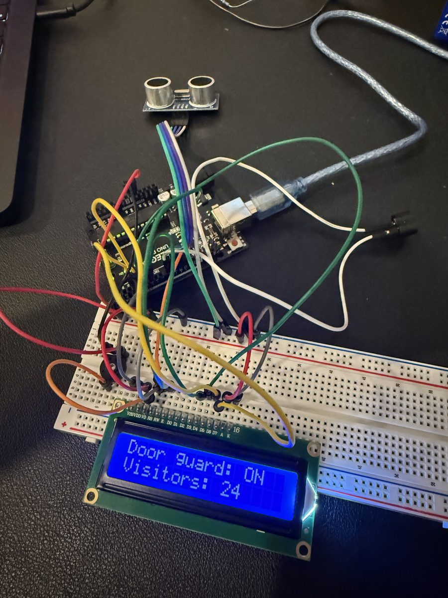

Door Greeter Bot
An afternoon build: a gadget by the bedroom door that sees you coming, plays a tune, and greets you on a little screen.
What you'll build
This is the real thing, built by two brothers at their desk. Yours will look a lot like it, wire spaghetti and all.


Before you start
Time: about 2 to 2½ hours, with snack breaks. Each step ends with something that works, so you can stop anywhere and still have a win.
Two jobs, swap every step:
🔄 Swap jobs after every step!
How it works
The blue ultrasonic sensor works like a bat. One silver "eye" (marked T) shouts a chirp too high for humans to hear. The other (marked R) listens for the echo bouncing off you. The Arduino times the echo: a longer wait means you're farther away.
When you get close enough, the Arduino plays a tune, lights an LED, and shows a greeting on the screen.
Try it: drag to move your hand
µs = microseconds, millionths of a second. Sound needs about 58 µs to travel 1 cm and bounce back.
Gather the parts
Everything is in your ELEGOO Super Starter Kit. Check them off as you find them.
Breadboard 101
The long lines along the edges marked + and − are power rails: every hole along one line is connected. In the middle, each short row of 5 holes is connected, but not across the center gap.
Set up the computer
⏱ About 15 minutes- Download and install the Arduino IDE from arduino.cc/en/software.
- Plug the UNO into the computer with the USB cable. The little ON light should glow.
- In the Arduino IDE: Tools → Board → Arduino AVR Boards → Arduino Uno.
- Tools → Port → pick the one that mentions Arduino Uno (on a Mac it looks like
/dev/cu.usbmodem…). - Open File → Examples → 01.Basics → Blink, then click the Upload arrow (→).
- Watch the tiny light marked L near pin 13: it blinks once a second.
delay(1000) to delay(100) and upload again. What happened? Now try delay(2000).
Give it eyes
⏱ About 20 minutes · ultrasonic sensorWire the power rails
| From the UNO | To the breadboard |
|---|---|
| 5V | The + rail (red wire) |
| GND | The − rail (black wire) |
Wire the sensor
Push the sensor into the breadboard with its eyes facing outward, so each of its 4 pins sits in its own row.
| Sensor pin | Connect to |
|---|---|
| Vcc | + rail |
| Trig | UNO pin 9 |
| Echo | UNO pin 10 |
| Gnd | − rail |
Upload this code
In the Arduino IDE: File → New Sketch, delete what's there, paste this, and upload.
// Stage 1: the robot can see!
const int TRIG_PIN = 9;
const int ECHO_PIN = 10;
void setup() {
pinMode(TRIG_PIN, OUTPUT);
pinMode(ECHO_PIN, INPUT);
Serial.begin(9600);
}
void loop() {
long cm = readDistanceCm();
Serial.print("Distance: ");
Serial.print(cm);
Serial.println(" cm");
delay(200);
}
long readDistanceCm() {
digitalWrite(TRIG_PIN, LOW);
delayMicroseconds(2);
digitalWrite(TRIG_PIN, HIGH); // shout!
delayMicroseconds(10);
digitalWrite(TRIG_PIN, LOW);
long echoTime = pulseIn(ECHO_PIN, HIGH, 30000); // listen for the echo
if (echoTime == 0) return 999; // no echo = nothing nearby
return echoTime / 58; // 58 microseconds per cm, there and back
}
Now open the Serial Monitor (the magnifying glass at the top right of the IDE) and set it to 9600 baud. Move your hand in front of the sensor and watch the numbers change.
Give it a voice
⏱ About 20 minutes · buzzerKeep the sensor wired. Add this:
| Part | Connect |
|---|---|
| Passive buzzer | Leg marked + (usually the longer one) → UNO pin 8. Other leg → − rail. |
Upload this code
This turns it into a car parking sensor: the closer you get, the faster it beeps. From 50 cm in, it beeps at top speed.
// Stage 2: parking-sensor beeps
const int TRIG_PIN = 9;
const int ECHO_PIN = 10;
const int BUZZER_PIN = 8;
void setup() {
pinMode(TRIG_PIN, OUTPUT);
pinMode(ECHO_PIN, INPUT);
pinMode(BUZZER_PIN, OUTPUT);
Serial.begin(9600);
}
void loop() {
long cm = readDistanceCm();
Serial.println(cm);
if (cm < 200) { // something within 2 meters?
tone(BUZZER_PIN, 880, 50); // short beep (880 is the note A)
delay(100); // wait for the beep, plus a tiny pause
if (cm > 50) {
delay((cm - 50) * 5); // farther than 50 cm = longer wait = slower beeps
}
} else {
delay(100);
}
}
long readDistanceCm() {
digitalWrite(TRIG_PIN, LOW);
delayMicroseconds(2);
digitalWrite(TRIG_PIN, HIGH); // shout!
delayMicroseconds(10);
digitalWrite(TRIG_PIN, LOW);
long echoTime = pulseIn(ECHO_PIN, HIGH, 30000); // listen for the echo
if (echoTime == 0) return 999; // no echo = nothing nearby
return echoTime / 58; // 58 microseconds per cm, there and back
}
880 to 440 (lower) or 2000 (squeakier). Change the 50 in cm > 50 and cm - 50 to 20. What changed?
Give it a face
⏱ About 45 minutes · LCD screenThis is the biggest step, so it's split in two. Keep the sensor and buzzer wired.
Part A: wake up the screen (power wires only)
- Push the LCD's 16 pins into the breadboard so each pin gets its own row. Pin 1 is labeled VSS; pin 16 is K.
- Push the knob's 3 legs into 3 separate rows. Left leg → + rail, right leg → − rail.
- Wire the LCD power pins from the table below: pins 1, 2, 3, 5, 15, 16.
- Plug in USB. The screen should light up. Slowly turn the knob until you see a row of little boxes.
Part B: the data wires
Unplug USB, then add the rest.
| LCD pin | Label | Connect to |
|---|---|---|
| 1 | VSS | − rail |
| 2 | VDD | + rail |
| 3 | V0 | Middle leg of the knob |
| 4 | RS | UNO pin 12 |
| 5 | RW | − rail |
| 6 | E | UNO pin 11 |
| 7–10 | D0–D3 | Nothing. Leave empty. |
| 11 | D4 | UNO pin 5 |
| 12 | D5 | UNO pin 4 |
| 13 | D6 | UNO pin 3 |
| 14 | D7 | UNO pin 2 |
| 15 | A | 220 Ω resistor → + rail |
| 16 | K | − rail |
Upload the full Door Greeter code
// Door Greeter Bot: the full version
#include <LiquidCrystal.h>
// LCD wires: RS, E, D4, D5, D6, D7
LiquidCrystal lcd(12, 11, 5, 4, 3, 2);
const int TRIG_PIN = 9;
const int ECHO_PIN = 10;
const int BUZZER_PIN = 8;
const int LED_PIN = 7;
const int TRIGGER_CM = 60; // how close before it says hi
// Change these! Max 16 characters each.
const char* greetings[] = {
"Hello, human!",
"Welcome back!",
"Halt! Password?",
"Robot says hi!",
"Nice socks."
};
const int NUM_GREETINGS = sizeof(greetings) / sizeof(greetings[0]); // counts them for you
bool someoneHere = false;
int visitors = 0;
void setup() {
pinMode(TRIG_PIN, OUTPUT);
pinMode(ECHO_PIN, INPUT);
pinMode(BUZZER_PIN, OUTPUT);
pinMode(LED_PIN, OUTPUT);
Serial.begin(9600);
lcd.begin(16, 2);
randomSeed(analogRead(A0));
showIdle();
}
void loop() {
long cm = readDistanceCm();
Serial.println(cm);
// Someone walked up: say hi once
if (cm < TRIGGER_CM && !someoneHere) {
someoneHere = true;
visitors++;
greet();
}
// They walked away: get ready for the next visitor
if (cm > TRIGGER_CM + 20 && someoneHere) {
someoneHere = false;
digitalWrite(LED_PIN, LOW);
showIdle();
}
delay(100);
}
void greet() {
digitalWrite(LED_PIN, HIGH);
lcd.clear();
lcd.print(greetings[random(NUM_GREETINGS)]);
lcd.setCursor(0, 1); // second line
lcd.print("Visitor #");
lcd.print(visitors);
playHello();
}
void showIdle() {
lcd.clear();
lcd.print("Door guard: ON");
lcd.setCursor(0, 1);
lcd.print("Visitors: ");
lcd.print(visitors);
}
void playHello() {
int notes[] = {523, 659, 784, 1047}; // C, E, G, high C
for (int i = 0; i < 4; i++) {
tone(BUZZER_PIN, notes[i], 150);
delay(180);
}
noTone(BUZZER_PIN);
}
long readDistanceCm() {
digitalWrite(TRIG_PIN, LOW);
delayMicroseconds(2);
digitalWrite(TRIG_PIN, HIGH); // shout!
delayMicroseconds(10);
digitalWrite(TRIG_PIN, LOW);
long echoTime = pulseIn(ECHO_PIN, HIGH, 30000); // listen for the echo
if (echoTime == 0) return 999; // no echo = nothing nearby
return echoTime / 58; // 58 microseconds per cm, there and back
}
Test it: walk up to it. It should play a tune, light the LED, and show a random greeting with your visitor number. Walk away and it resets to Door guard: ON.
Make it yours
⏱ About 15 minutes · code changesNow it's the kids' turn to be the programmers. Upload after each change.
- Write your own greetings. Edit the
greetingslist. Put your names in! Keep each one 16 characters or less, inside quotes, with a comma after each except the last.
- Change the trigger distance.
TRIGGER_CM = 60means 60 cm. Try 30 or 100. - Compose a new tune. Change the numbers in
notes[]using this chart. Tap the keys to hear each note and build your tune, or type your own numbers into the box and press Play:
4 in i < 4 to match how many notes you have.
Mount it at the door
⏱ About 20 minutes- Put the UNO and breadboard in a small box. Cut two round holes for the sensor's eyes and a window for the screen. Decorate it!
- Place it near the bedroom door at about chest height for your shortest kid, eyes facing where people walk up.
- Power it with a USB phone charger or a power bank. (The kit's 9V battery works through the round jack, but drains fast.)
- Calibrate: with the laptop connected, open the Serial Monitor and check the reading when nobody is there.
TRIGGER_CMmust be smaller than that number, or it'll greet the wall forever.
Troubleshooting
Detective time. Click a problem to see what to check.
Upload fails or no port in the Tools menu
Try another USB cable (some are charge-only). Make sure Board is set to Arduino Uno and you picked the right Port.
Distance always says 999 or doesn't change
Check that Trig goes to pin 9 and Echo to pin 10 (they're easy to swap). Check Vcc and Gnd reach the rails.
Half the breadboard doesn't seem to work
On some breadboards the + and − rails are split in the middle (look for a gap in the red/blue line). Add a short wire to bridge the gap.
It keeps greeting when nobody is there
Something (a wall, the door, furniture) is closer than TRIGGER_CM. Aim the sensor differently or lower the number. Use the Serial Monitor to see what it's "seeing."
Screen lights up but shows nothing
Turn the knob slowly from one end to the other. Contrast is very sensitive.
Screen shows only boxes, or gibberish
A data wire is wrong or loose. Recheck RS → 12, E → 11, D4 → 5, D5 → 4, D6 → 3, D7 → 2. Press wires in firmly, then press the UNO's reset button.
Buzzer only clicks or sounds harsh
You probably have the active buzzer (sealed black underneath). Swap it for the passive one (green board underneath).
LED doesn't light
Flip it around. The long leg must be on the pin 7 side (through the resistor).
Round 2 ideas
Once the greeter works, here's where to take it next, all with parts already in the kit:
- Remote-control modes: use the kit's IR remote and IR receiver. Button 1 = greeter, button 2 = "Do not disturb" sign, button 3 = alarm siren if anyone sneaks up.
- A waving hand: tape a cardboard hand to the servo motor (SG90) so it waves hello.
- Room weather: add the DHT11 sensor so the idle screen shows temperature and humidity.
- Secret handshake: it only stays quiet if you wave your hand twice quickly in front of it.
ELEGOO's free PDF tutorial for this kit has a lesson for each of these parts.